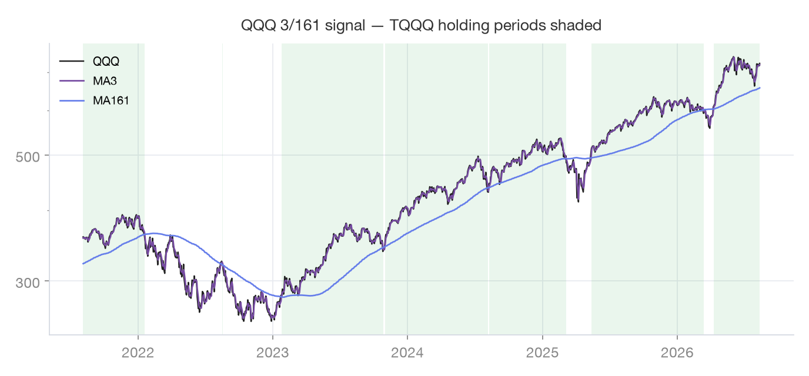
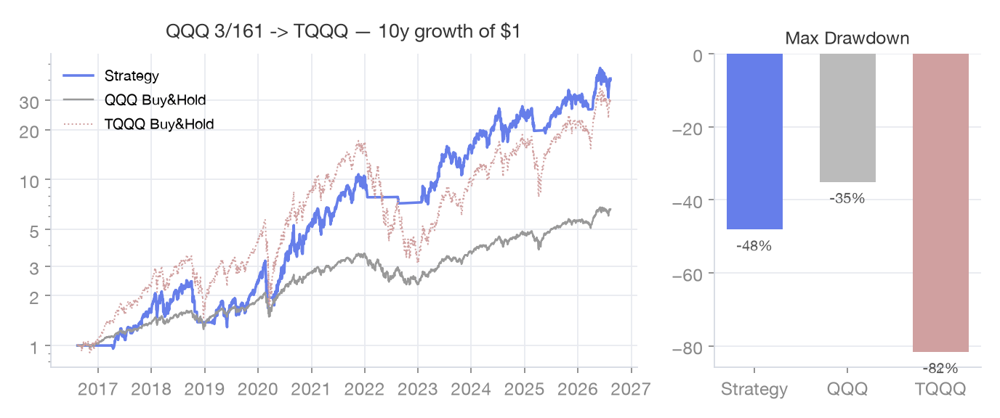

휩쏘 감소
QQQ 3,161
신호는 QQQ 3일선×161일선으로 보고, 매매는 TQQQ로 — 최적화 시리즈가 찾아낸 조합입니다.
작동 원리
커뮤니티 최적화 시리즈가 이동평균 조합을 전수 탐색한 결과, 신호를 QQQ에서 얻는 3/161 조합이
TQQQ 신호보다 연 2%p가량 우수하고 거래 횟수도 크게 줄었습니다. 3일선이 161일선 위로 올라서면 TQQQ 매수,
아래로 내려가면 전량 매도 후 회전 자산으로 피신합니다.
신호 자산 · 매매 자산
| 신호(차트) 기준 | QQQ · 3일선 × 161일선 |
|---|
| 실제 매매 | TQQQ (나스닥 3배) |
|---|
| 매도 후 대기 | SGOV (단기 국채) |
|---|
규칙
| 신호 | QQQ 3일선 vs QQQ 161일선 (매매 대상은 TQQQ) |
|---|
| 매수 | 3일선이 161일선 상향 돌파 → TQQQ 매수 |
|---|
| 매도 | 3일선이 161일선 하향 이탈 → TQQQ 전량 매도 |
|---|
| 근거 | 최적화 5편: QQQ 3/161이 최적, 거치식 대비 수익률·MDD 모두 우수 |
|---|
실데이터 차트

최근 5년 · 초록 음영 = 보유 구간

최근 10년 · $1 성장 시뮬레이션 (세금·수수료 미반영)
자주 묻는 질문
- 왜 신호만 QQQ를 쓰나요?
- QQQ는 TQQQ보다 노이즈가 적어 짧은 이평(3일)을 써도 휩쏘가 덜합니다. 신호의 안정성과 레버리지 수익을 분리해 가져가는 구성입니다.
- 161일이라는 숫자의 의미는?
- 전수 탐색(스윕)에서 나온 값입니다. 최적화 시리즈는 n1=3 고정, n2는 210~230도 유효한 대역으로 제시했습니다 — 과최적화를 피하려면 특정 숫자보다 "대역"으로 이해하세요.
- 신호 확인일을 켜야 하나요?
- 휩쏘가 잦은 횡보장에서는 1~3일 확인이 가짜 신호를 걸러줍니다. 대신 진입·이탈이 그만큼 늦어집니다. 앱 설정의 "신호 재확인" 옵션(0/2/3일)으로 취향에 맞게 선택하세요.
- 원본 200일선 대비 단점은 없나요?
- 신호가 지수(QQQ) 기준이라 TQQQ 고유의 문제(변동성 잠식 등)를 직접 반영하지 못하고, 하락 반영이 반 박자 늦을 수 있습니다. 그래도 백테스트 전 구간에서는 거래 횟수 감소와 수익률 개선이 이를 상회했습니다.
출처
본 페이지의 백테스트 차트는 야후 파이낸스 일봉(최근 10년, 배당 조정 종가)으로 앱의 규칙을 재현한
참고 자료입니다. 세금·수수료·호가 슬리피지를 반영하지 않았고, 과거 성과는 미래 수익을 보장하지 않습니다.
규칙 서술과 실제 신호는 항상 앱의 최신 구현을 기준으로 합니다. 본 콘텐츠는 투자 자문이 아니며, 투자 판단과
책임은 이용자 본인에게 있습니다.
앱에서 이 전략 켜기 → 설정 · 전략 선택